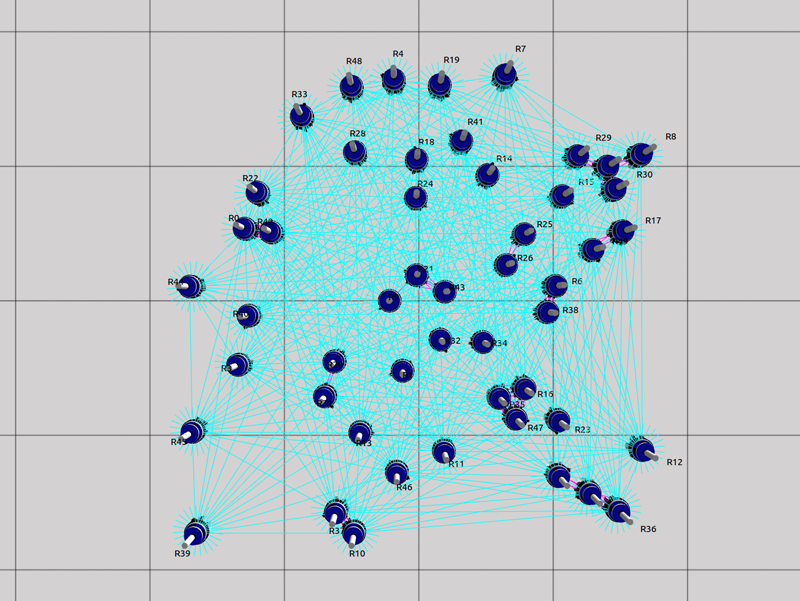
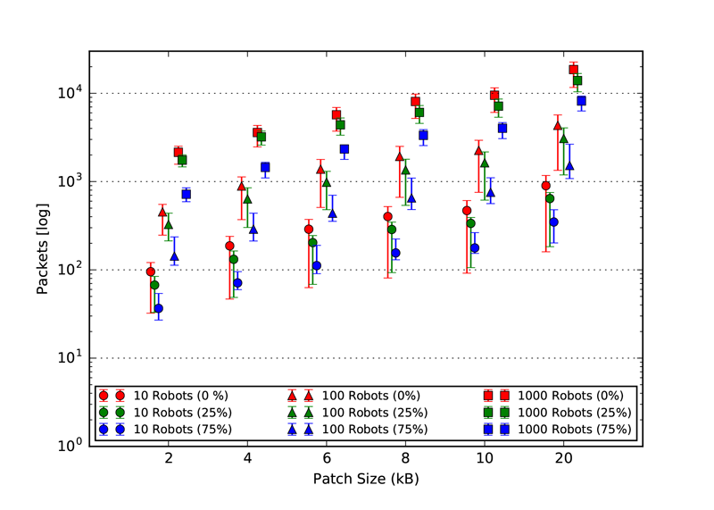
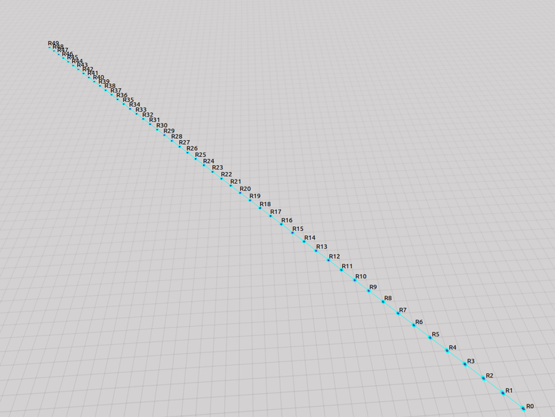
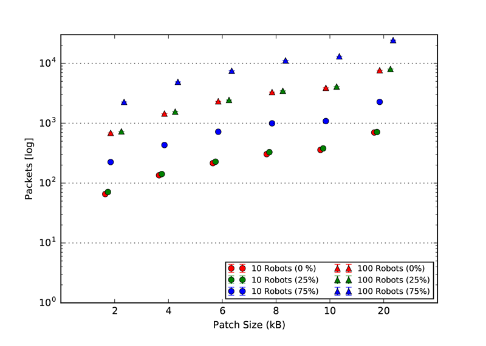
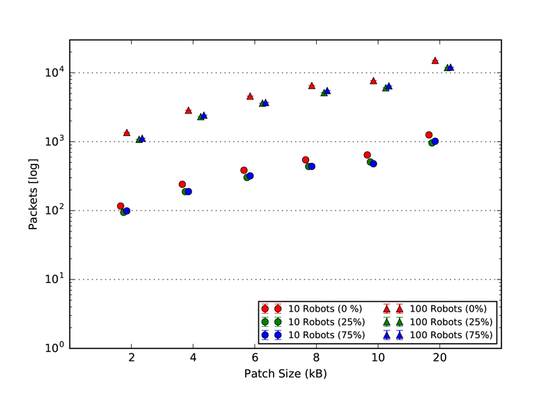
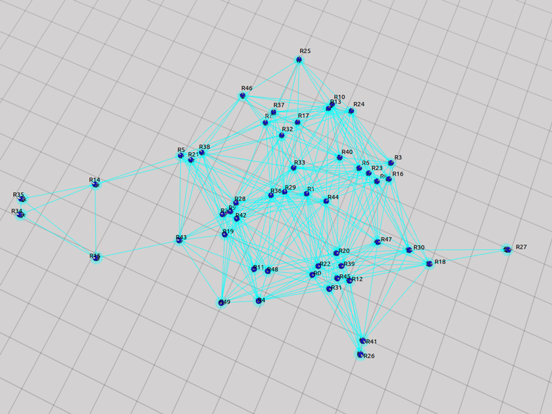
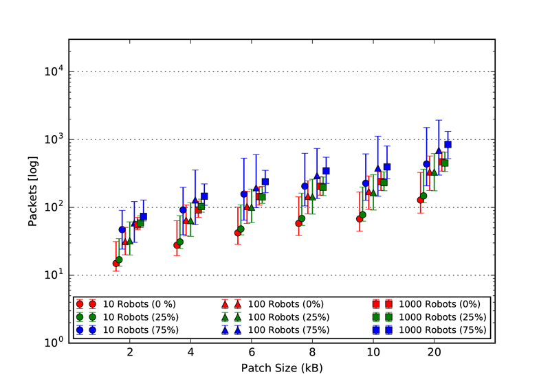
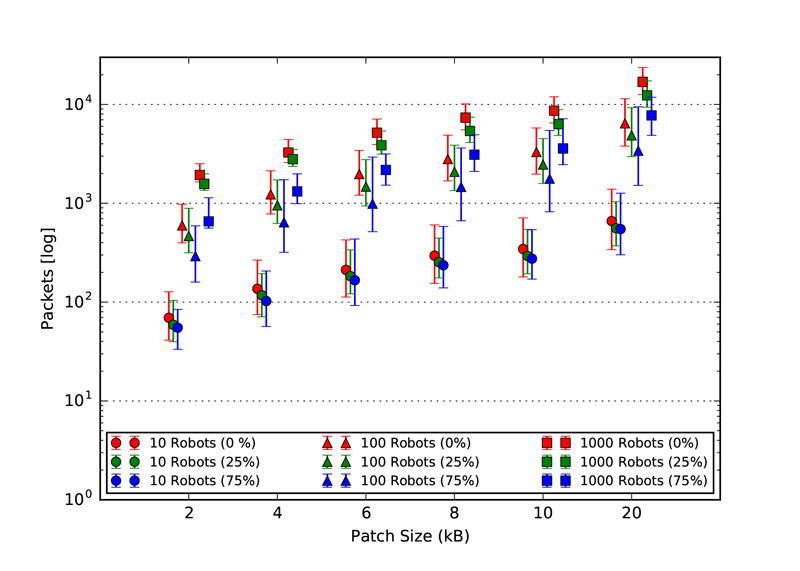

OTA Updates for Robotic Swarms
IEEE Software (Special Issue Release Engineering 3.0) Supplementary material
Real-robot Demonstration
The Video demonstrates a series of field experiments performed with the tool set presented in the paper. During the experiments, the robots were equipped with the ROS implementation of the tool and for the communication an additional package called XbeeMav node was used.
Our ROS implementation is platform-agnostic and was deployed on the DJI Matrice 100, equipped with a NVidia TK1 companion computer, 3DR Solo with a Raspberry Pi 3, Intel Aero and HUSKY A200. The communication infrastructure between the robots were based on a mesh created by XBee transceivers.
In the experiments, the robots were commanded to take off and reach a formation using Lennard John’s Potential, a physics based potential function. Despite of certain oscillations, the robots stabilized roughly around their minimum calculated by the potentials.
Update Consensus
# Create a barrier and set current state as barrier
function barrier_set(transf) {
statef = function() {
barrier_wait(transf)
}
barrier = stigmergy.create(BARRIER_VSTIG)
# Add the robot within the barrier
function barrier_ready() {
barrier.put(id, 1)
}
# Executes the barrier
function barrier_wait(transf) {
barrier.get(id)
if(barrier.size() == swarm_size ) {
# If all robots in barrier
# proceed to next state
statef=transf
}
}The agreement over the code version for our solution is achieved with a mechanism based on virtual stigmergy that forces the robots to stay in a specific state until all units agreed to proceed to the state migration. This mechanism is called a barrier, i.e. a protocol for global consensus. A barrier can be implemented in a number of ways, our approach uses virtual stigmergy and swarm construct of Buzz. The swarm construct allows to define groups of robots based on their attributes, track their number and assign them specific actions.
Our implementation of a barrier is as follow: a virtual stigmergy table is created so that every robot will add an entry to it when they reach the target state. In parallel, a swarm table is created tagging all the robots in the swarm to determine dynamically their number. Once the entries in the virtual stigmergy table equals the number of robots, it is assumed that all the robots reached the target state and are ready for state migration. This code snippet shows such an example of a Buzz script for the barrier.
Update Security
| Old artifact | New artifact | Patch | Encrypted patch |
| 3.3 | 4.6 | 1.2 | 2.5 |
| 3.3 | 5.6 | 2 | 4 |
| 3.3 | 8.5 | 4 | 8 |
| 3.3 | 11.5 | 6 | 12.1 |
| 3.3 | 14.9 | 8 | 16.9 |
| 3.3 | 17 | 10 | 19.9 |
| 3.3 | 30 | 20 | 37.9 |
A stream cypher is used in this solution primarily to increase speed and security but at the cost of larger encrypted stream sizes. One of the drawbacks of stream cypher is to use a unique initialization vector during each encryption. The cypher in this proposed update protocol uses the hash of the previous code versions’ artifact as the initialization vector. This denotes that, the hash of the code artifact from the previous release is required to decrypt the patch from the communication stream.
In order to hijack the system and inject a malicious patch, a hacker would require the previous releases’ artifact or at least the initial artifact deployed on the robots. This is less likely to happen and hence increases the security of the system.
Simulations - Static Topology
As explained in our paper, we used three static topologies that simulates and demonstrates the scalability of our approach. The three topologies are: 1. Cluster, 2. Line and 3. Scale free. The rendered view of these topologies from the ARGOS3 Simulator is shown in the first figures and all the other four figures in each class, represent the number of packets exchanged by the robots in four different categories: 1. Acknowledgement messages sent, 2. Acknowledgement messages received, 3. Packets with code sent and 4. packets with code received.
Cluster Topology

Code packet sent
|
Code packet received |
ACK packets sent

|
ACK packets received
|
Line Topology

Code packet sent |
Code packet received |
ACK packets sent
|
ACK packets received
|
Scale-Free Topology

Code packet sent |
Code packet received |
ACK packets sent

|
ACK packets received
|
Related Work
The works of Davis et al. [2] and Chung et al. [3] consist of a ROS-based software controller for a swarm of fixed wing Unmanned Aerial Vehicles' (UAV). The fixed wing UAVs are loaded with a set of behavior binaries before deployment, so the operator selected the adequate binary during flight. The approach was experimented with a swarm of 50 fixed wing UAVs [4]. This system does not allow in-flight installation of new binaries, nor does it integrate a mechanism for global consensus on the current binary.
Hauert et. al. [5] introduced a deployment tool for a flock of fixed-wing UAVs to demonstrate nature-inspired flocking. The deployment platform used IEEE 802.11n protocol for communication but did not provide any mechanism to update the behavior in-flight.
None of the later approaches includes an in-mission update and maintain consistency of the artifacts with a global agreement mechanism. These issues has been broadly addressed in the wireless sensor network (WSN) community. Pilloni et. al. [6] proposed an approach to distribute updates over a WSN with gossip-based routing. Our approach is roughly inspired from this work, but adapted to the actuation and environmental interaction that are specific to robots.
Brown's review [7] details other update solutions for WSNs, from which the most notable approaches are: Trickle, Deluge, MOAP, PDM and Treshnet. These approaches do not take mobility into consideration, since their primary targets are WSNs. In addition, robots need to reach a safe state (e.g. a landed or hovering attitude for a quadcopter) before a controller update can be performed. In our work, we borrow several concepts from these works (e.g. packet management protocols, gossip-based information propagation, and incremental deployment), and apply them to fully-decentralized robotic platforms.
To the best of our knowledge, none of the existing approaches is fully decentralized, which makes our work a first step in this direction.
References:
- M. Brambilla, E. Ferrante, M. Birattari, and M. Dorigo, “Swarm robotics: A review from the swarm engineering perspective,” Swarm Intelligence, vol. 7, no. 1, pp. 1–41, 2013.
- D. T. Davis, T. H. Chung, M. R. Clement, and M. A. Day, “Consensus- Based Data Sharing for Large-Scale Aerial Swarm Coordination in Lossy Communications Environments,” in IEEE/RSJ International Conference on Intelligent Robots and Systems (IROS), 2016, pp. 3801–3808.
- T. H. Chung, K. D. Jones, M. A. Day, M. Jones, and M. Clement, “50 vs. 50 by 2015: Swarm vs. swarm uav live-fly competition at the naval postgraduate school,” 2013.
- T. H. Chung, M. R. Clement, M. A. Day, K. D. Jones, D. Davis, and M. Jones, “Live-fly, large-scale field experimentation for large numbers of fixed-wing UAVs,” Proceedings - IEEE International Conference on Robotics and Automation, vol. 2016-June, pp. 1255–1262, 2016.
- S. Hauert, S. Leven, M. Varga, F. Ruini, A. Cangelosi, J. C. Zufferey, and D. Floreano, “Reynolds flocking in reality with fixed-wing robots: Commu- nication range vs. maximum turning rate,” IEEE International Conference on Intelligent Robots and Systems, pp. 5015–5020, 2011.
- V. Pilloni, M. Franceschelli, L. Atzori, and A. Giua, “Deployment of Distributed Applications in Wireless Sensor Networks,” IEEE Transactions on Control Systems Technology, vol. 24, no. 5, pp. 1828–1836, 2016. [Online]. Available: http://www.ncbi.nlm.nih.gov/pubmed/22164024
- S. Brown and C. Sreenan, Software Updating in Wireless Sensor Networks: A Survey and Lacunae, 2013, vol. 2, no. 4. [Online]. Available: http://www.mdpi.com/2224-2708/2/4/717/